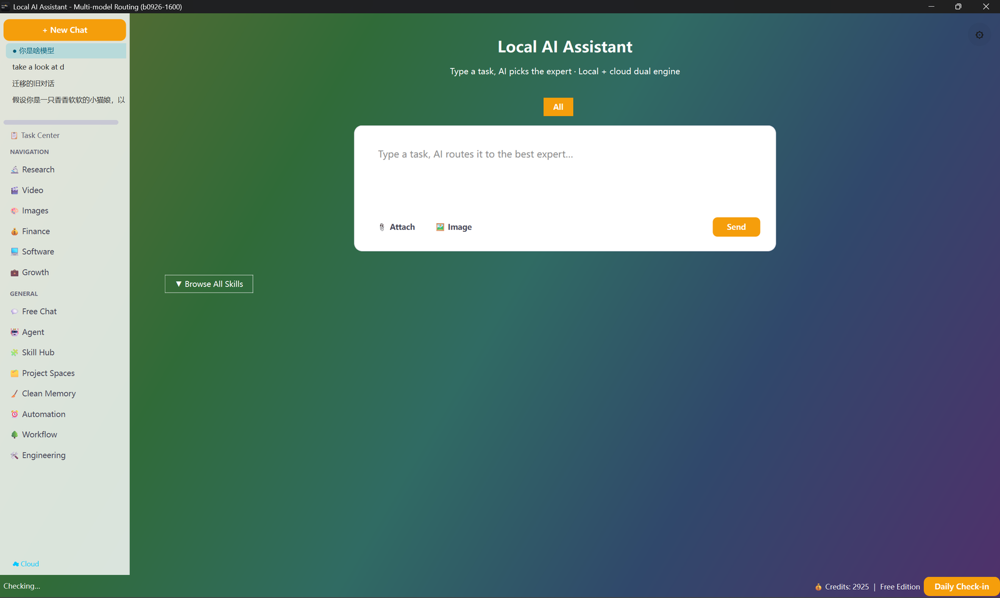

它能做什么
为什么需要多通道
海外聚合平台会把部分厂商的闭源模型按「账单地区」封锁——同一平台上有的模型能用、有的直接 403。国内官方平台与合规聚合平台不存在这个问题，但一家只覆盖自家模型。两边互补，才是最稳的方案。
14 个国内直连预设
硅基流动、阿里云百炼、DeepSeek 官方、火山方舟、智谱 BigModel、月之暗面 Kimi、MiniMax、腾讯混元、魔搭 ModelScope、302.AI、DMXAPI、AIHubMix、NVIDIA NIM、阶跃星辰。全部 OpenAI 协议兼容，选平台即自动填 Base URL。
主力 + 兜底，双活互备
OpenRouter 作主通道时自动带上国内 Key 作兜底，反之亦然。一条通道抽风，另一条同类模型顶上，对话不中断。
地区体检（自动，免费）
启动时对目录里的模型逐个发一条最小请求（max_tokens=1，花费≈$0），实测哪些被地区封锁，结果落盘复用。换 Key 自动重测，同一把 Key 只测一次。
受限模型明确标注
被封的模型在下拉框标「🚫 地区受限」并沉底；自动选模直接跳过它们。你永远不会「选了才发现跑不通」。
缺 Key 的模型也会说话
没配某个平台 Key 时，属于该平台的模型标「🔒 需 X Key」——它告诉你去哪补哪把钥匙，而不是含糊地报一句鉴权失败。
换平台不用改代码
所有通道共用一套调用协议与同一套模型索引，切换平台只改一个下拉框选项，工作流、专家、技能全部照常工作。
怎么用
- 1设置 → 云端模型，provider 下拉里挑一个平台（例如「硅基流动」）。
- 2弹窗会自动带出该平台的 Base URL，粘上你的 Key；模型名可填该平台的任意模型 id。
- 3验证并保存，重启后该平台的模型即可在顶部下拉里选择。
- 4想双通道互备，就把两个平台的 Key 都填上，系统会自动组主力 + 兜底。
技术亮点
- 通道能力表统一维护：每个平台一条记录（label / base_url / 注册地址 / 常见模型示例），新增平台不超过 10 行代码。
- 地区体检结果与 Key 指纹绑定存储，避免每次启动都花 3 分钟重测；换 Key 立即失效重测。
- 逐模型粒度判定（不是按厂商一刀切）：同一厂商里开源权重模型往往不受限，实测能过就放行。
- 请求头按通道自适应：部分平台用 api-key 头而非 Bearer，客户端自动切换，用户无感。
- 所有通道共用 429 / 5xx / 403 的统一错误分类与降级策略，行为一致可预期。
看一眼
